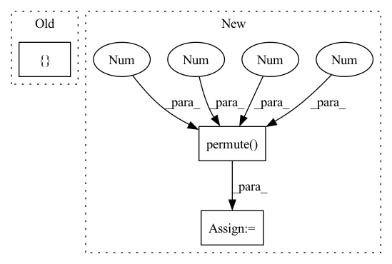

Pattern ID :2054

Before Change
cb = repeat(cb)
cr = repeat(cr)
return torch.cat([y.unsqueeze(3), cb.unsqueeze(3), cr.unsqueeze(3)], dim=3)
class YCbCr2RGBJpeg(nn.Module):
After Change
height, _ = x.shape[1:3]
batch_size = x.shape[0]
x_reshaped = x.view(batch_size, height // self.k, self.k, -1, self.k)
x_transposed = x_reshaped.permute(0, 1, 3, 2, 4)
out = x_transposed.contiguous().view(batch_size, -1, self.k, self.k)
return out
In pattern: SUPERPATTERN
Frequency: 3
Non-data size: 3
Instances
Fragment ID: 13881043
Project Name: lornatang/real_esrgan-pytorch
Commit Name: edfbb6820fc2084c2ffe132e9b64a348a323d1e7
Time: 2022-06-16
Author: liuchangyu1111@gmail.com
File Name: imgproc.py
M Class Name: ChromaUpsampling
N Class Name: _BlockSplitting
M Method Name: forward(2)
N Method Name: forward(4)
M Parent Class: nn.Module
N Parent Class: nn.Module
M File Name: imgproc.py
N File Name: imgproc.py
M Start Line: 1770
M End Line: 1789
N Start Line: 1230
N End Line: 1237
'>
Before Change
batch_size, num_of_vertices, in_channels, num_of_timesteps = x.shape
data = Data(edge_index=edge_index, edge_attr=None, num_nodes=num_nodes)
lambda_max = LaplacianLambdaMax()(data).lambda_max
outputs = []
for time_step in range(num_of_timesteps):
outputs.append(torch.unsqueeze(self.cheb_conv(x=x[:,:,:,time_step], edge_index=edge_index,
batch = batch_size, lambda_max=lambda_max), -1))
After Change
tmp = tmp.permute(2,0,1) // (B*T_in, N_nodes, F_in)
output = F.relu(self.cheb_conv(x=tmp, edge_index=edge_index,
batch = batch_size*num_of_timesteps, lambda_max=lambda_max))
spatial_gcn = output.permute(1,2,0).reshape(num_of_vertices,self.nb_time_filter,batch_size,num_of_timesteps).permute(2,0,1,3) // (B,N_nodes,F_out,T_in)
// convolution along the time axis
time_conv_output = self.time_conv(spatial_gcn.permute(0, 2, 1, 3)) // (b,F,N,T)
'>
Fragment ID: 13881027
Project Name: benedekrozemberczki/pytorch_geometric_temporal
Commit Name: 509a541a01913f5b45859b801c48b5fd264bd94a
Time: 2021-03-18
Author: He_YX@outlook.com
File Name: torch_geometric_temporal/nn/convolutional/mstgcn.py
M Class Name: MSTGCN_block
N Class Name: MSTGCN_block
M Method Name: forward(4)
N Method Name: forward(4)
M Parent Class: nn.Module
N Parent Class: nn.Module
M File Name: torch_geometric_temporal/nn/convolutional/mstgcn.py
N File Name: torch_geometric_temporal/nn/convolutional/mstgcn.py
M Start Line: 36
M End Line: 41
N Start Line: 44
N End Line: 48
'>
Before Change
m, x_rnn, h_erb = self.erb_stage(feat_erb)
spec = self.mask(spec, m, atten_lim) // [B, 1, T, F, 2]
lsnr, _ = self.lsnr_net(x_rnn)
out_specs = [spec]
// re/im into channel axis
spec_f = spec.squeeze(1)[:, :, : self.df_bins].permute(0, 3, 1, 2) // [B, 2, T, F_df]
h_conv: Optional[Tensor] = None
After Change
for i, (stage, _lim) in enumerate(zip(self.refinement_stages, self.refinement_snr_max)):
refinement, h_conv, _ = stage(spec_f, h_conv)
spec_f = spec_f + refinement
out_specs[i + 1][..., : self.df_bins, :] = spec_f.permute(0, 2, 3, 1)
// if lim >= 100:
// spec_f, _ = stage(spec_f)
// else:
// idcs = torch.logical_and(lsnr < lim, lsnr > self.refinement_snr_min).squeeze(-1)
'>
Fragment ID: 13880989
Project Name: rikorose/deepfilternet
Commit Name: 2aacf4d049fc9e7b073c15d705c60f87f3d554f7
Time: 2022-04-12
Author: h.schroeter@pm.me
File Name: DeepFilterNet/df/multistagenet.py
M Class Name: MSNet
N Class Name: MSNet
M Method Name: forward(5)
N Method Name: forward(5)
M Parent Class: nn.Module
N Parent Class: nn.Module
M File Name: DeepFilterNet/df/multistagenet.py
N File Name: DeepFilterNet/df/multistagenet.py
M Start Line: 471
M End Line: 477
N Start Line: 471
N End Line: 480